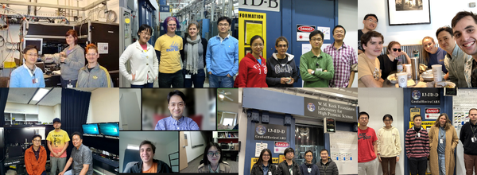

Taehyun Kim
Postdoctoral researcher
Current members and alumni of the Dan Shim Lab.

Postdoctoral researcher
Postdoctoral researcher
Postdoc researcher
Ph.D. student
Undergraduate researcher
Undergraduate researcher
Sibo Chen (2024-2025) Postdoctoral researcher. Now an assistant professor at Arizona State University.
Erin Mann (2023-2024) Undergraduate student.
Shradhanjli Ravikumar (2021-2023) Undergraduate student. Now a Ph.D. student at Harvard University.
Enzo Carrascal (2023) Undergraduate student. Now a Ph.D. student at Caltech.
Harrison Horn (2018-2022) Ph.D. student. Now Postdoctoral Researcher at Livermore National Laboratory.
Suyu Fu (2020-2022) Postdoc researcher. Now Assistant Professor at Zhejiang University.
Helene Piet (2017-2021) Postdoc researcher and Research associate. Now Scientist at W. L. Gore.
Byeongkwan Ko (2015-2021) Ph.D. student and Postdoc researcher. Now Postdoc at Michigan State University.
Britany Kulka (2018-2021) Undergraduate student and Master degree student. Now Ph.D. student at Oxford University.
Robert Rezvani (2019) Undergraduate student.
Ayla Zustra (2019) Undergraduate student.
Jacqueline Tappan (2018-2019) Undergraduate student. Now Staff Hydrologist at Leonard Rice Engineers Inc.
Abigail Weibel (2017-2018) Undergraduate student. Now Project Manager Associate for ASU's Interplanetary Initiative.
Huawei Chen (2014-2019) Ph.D. student. Now Staff Scientist at China University of Geosciences, China.
Jonathan Dolinschi (2017-2019) Master degree student. Now Ph.D. student at BGI.
Carole Nisr (2012-2018) Postdoc researcher and Research associate. Now Professor at Department of Physical Sciences, Phoenix College.
Shaela Noble (2015-2016) Undergraduate student. Master degree student in the Environmental Policy and Management program at UC Davis.
Patrick Kennedy (2014-2015) Undergraduate student.
Yu Ye (2012-2014) Postdoc. Now Associate Professor at China University of Geosciences, China.
Qian Zhang (2012-2013) Visiting graduate student from Peking University, China. Now Research Staff at China University of Geosciences, China.
Chen Gu (2010-2012) Graduate Student. Now Assistant Professor at Tsinghua University.
Antonio Buono (2011-2012) Postdoc. Now Staff Scientist at Exxon-Mobil.
Brent Grocholski (2008-2011) Postdoc. Now Senior Editor at journal Science.
Krystle Catalli (2005-2011) Graduate Student, DOE NNSA Stewardship Science Graduate Fellow. Now Reliability Engineer at Apple Inc.
Lizi George (2009) Undergraduate Student (UROP). Now Applications Engineer at Silicon Laboratories.
Michael DeMeo (2008-2009) Undergraduate Student (UROP). Now Application Engineer at Exa Corporation.
Deidre LaBounty (2008) Undergraduate Student (Summer UROP). Now Graduate student at University of Alaska Fairbanks.
Rachel Zucker (2007-2009) Undergraduate Student (UROP). Now Software Engineer at Cruise Automation.
Justin Hustoft (2006-2007) Postdoc. Now Assistant Professor of Physics, Mount Mary University.
Caitlin Murphy (2006-2007) Undergraduate Student (Senior thesis). Now a Senior Energy Policy Analyst at National Renewable Energy Laboratory.
Sarah Slotznick (2006) Undergraduate Student (UROP). Now Assistant Professor at Dartmouth College.
Nicholas Leiby (2004-2005) Undergraduate Student (UROP). Now Lead Research Scientist at Two Six Labs.
Scott Lundin (2004-2006) Graduate Student. Now Director of Offshore Energy - East at Tetra Tech.
Javier Santillan (2004-2006) Ford Post-doctoral Fellow. Now Global CT Manager at Apple.
Sandeep Rekhi (2003-2005) Postdoc. Now Senior Engineer at Apple, Inc.